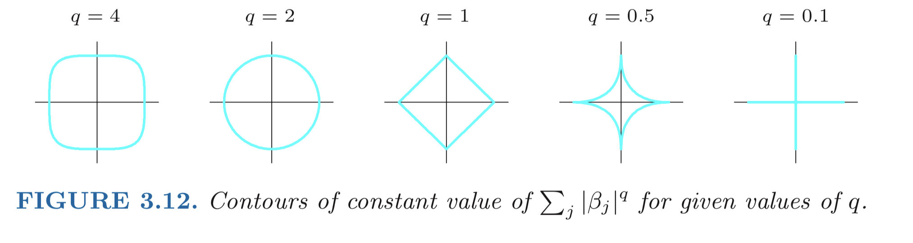
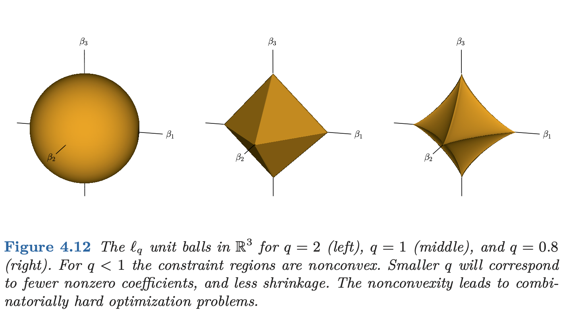
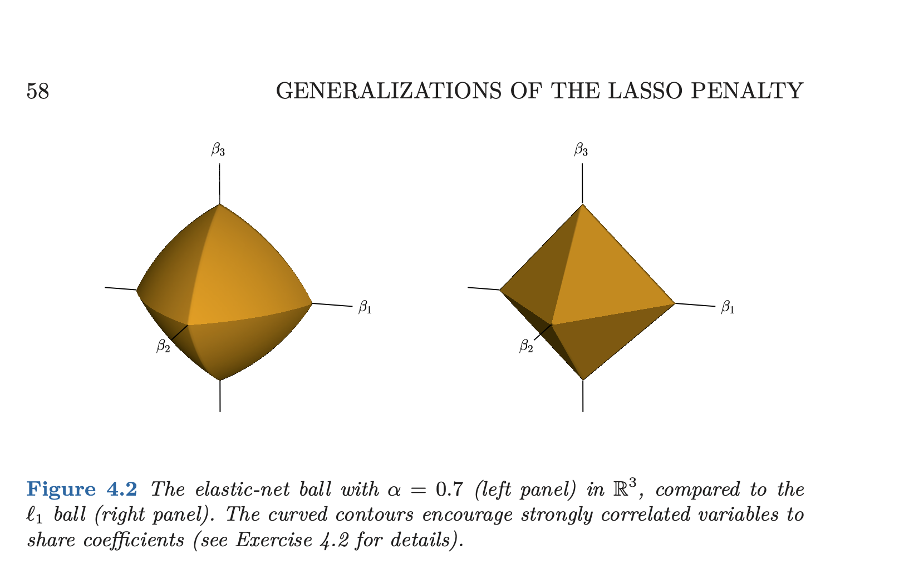
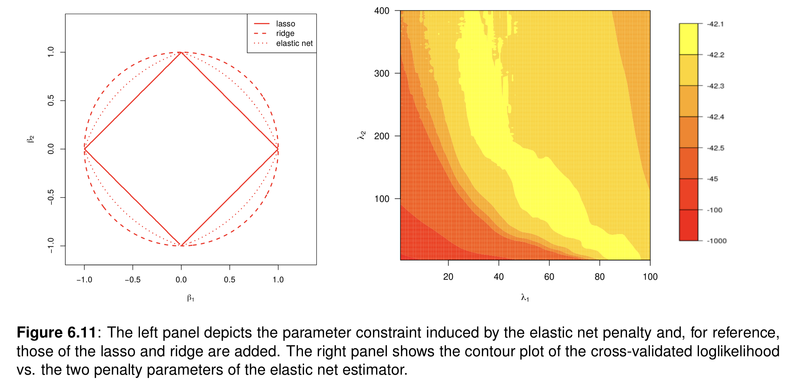
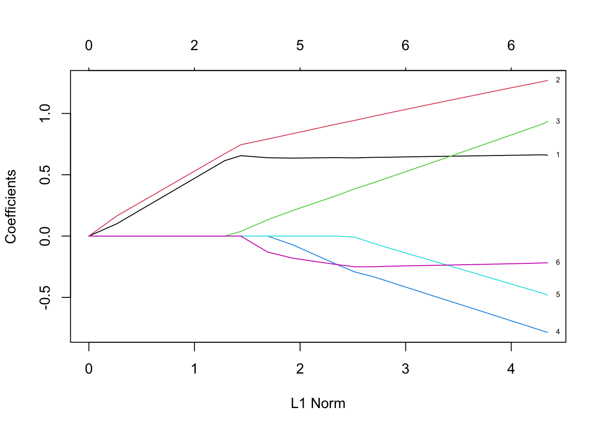
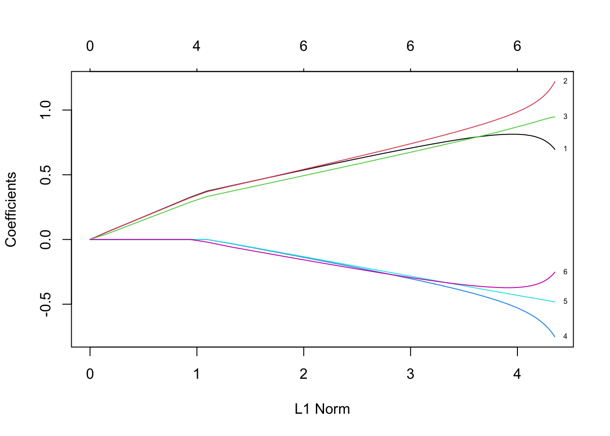
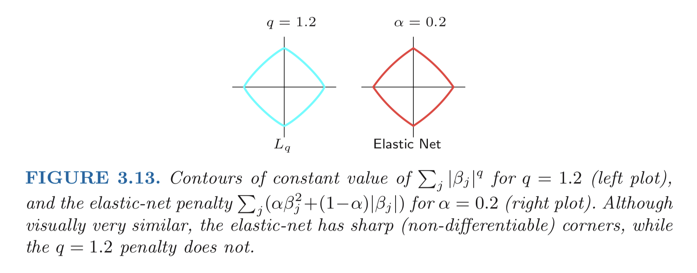
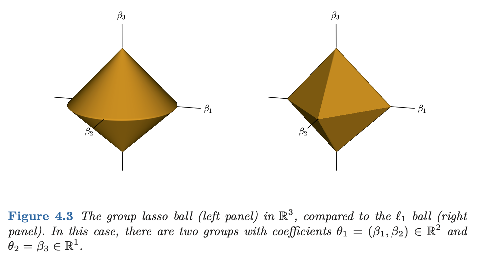
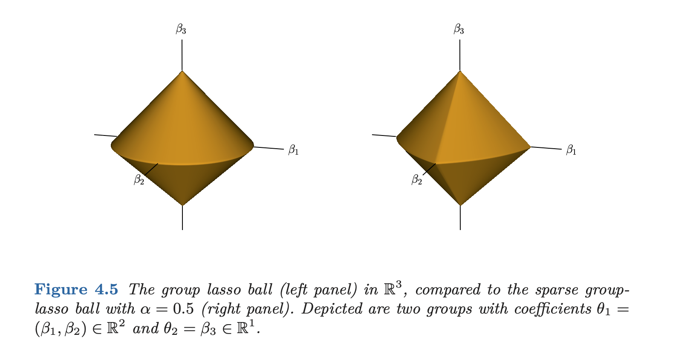
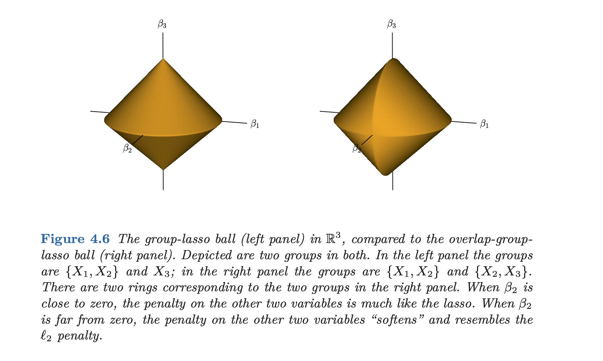

MA8701 Advanced methods in statistical inference and learning
L9: Lasso-variants for the linear model
Before we begin
Literature
- [HTW] Hastie, Tibshirani, Wainwrigh: “Statistical Learning with Sparsity: The Lasso and Generalizations”. CRC press. Ebook. Chapter 4.1-4.3,4.6
and for the interested student
- [WNvW] Wessel N. van Wieringen: Lecture notes on ridge regression Chapter 6.6
- [CASI] Efron and Hastie (2016) Chapter 16 (lasso in general)
Goal
The main goal of this part is to
- know about these special versions of the lasso (also in combination with the ridge), and
- to see which practical data situation these can be smart to use.
Maybe one of these is suitable for the Data analysis project?
Theoretical properties and algorithmic details are not on the reading list.
Lasso and ridge
We have seen that the ridge regression shrinks the regression coefficients (as compared to the least squares solution), while the lasso regression both shrinks and sets some coefficients to zero (model selection).
Why do we need lasso variants
- empirically lasso sometimes does not perform well for highly correlated variables
- in some situations we would like a group of covariates to either be in or out of the model “together”, for example a dummy variable coded factor
The \(l_q\) regression
\[ \text{minimize}_{\beta_0,\beta} \{ \sum_{i=1}^N (y_i-\beta_0-\sum_{j=1}^p x_{ij}\beta_j )^2 + \lambda \sum_{j=1}^p \lvert \beta_j\rvert^q \}, q\ge 0\]
- \(q=0\): best subset regression
- \(q=1\): lasso
- \(q=2\): ridge
Remark: \(l_q\) is the but penalty of the form \(\lvert \beta_j\rvert^q\). Note that \(l_2\) is thus the squared \(L_2\) norm (squared Euclidean norm).
Properties
- \(0 \le q \le 1\): not differentiable
- \(1<q<2\): in between lasso and ridge, but differentiable (and no variable selection property)
- \(q\) can be estimated from data, but according to Hastie, Tibshirani, and Friedman (2009) this is “not worth the effort for the extra variance incurred”


Bridge regression
This is \(l_q\) but with \(q>1\).
\[ \text{minimize}_{\beta_0,\beta} \{ \frac{1}{2}\sum_{i=1}^N (y_i-\beta_0-\sum_{j=1}^p x_{ij}\beta_j )^2 + \lambda \sum_{j=1}^p \lvert \beta_j\rvert^q \}, q\ge 0\]
Elastic net
(HTW 4.2) Origin of method: Zou and Hastie (2005)
- Compromise between the ridge and lasso penalty.
- Lasso gives sparsity but does not handle correlated variables well.
- Ridge handles correlated variables well, but is not sparse.
Solution: elastic net which handles” coefficients of correlated features together (similar values or all zero).
The penalty used is now weighted sum of the ridge and the lasso penalty.
Minimization problem
\[ \text{minimize}_{\beta_,\beta} \{ \sum_{i=1}^N (y_i-\beta_0-\sum_{j=1}^p x_{ij}\beta_j )^2 + \lambda \sum_{j=1}^p (\frac{1}{2}(1-\alpha) \beta_j^2+\alpha \lvert \beta_j\rvert )\}\]
again, \(\lambda \ge 0\) is a complexity (regularization, penalty) parameter controlling the amount of shrinkage together with \(\alpha \in [0,1]\) that “balance” out the penalty between the squared and absolute penalty.
- \(\alpha=1\): lasso only
- \(\alpha=0\): ridge only
The problem is strictly convex if \(\lambda>0\) and \(\alpha<1\) which gives uniqueness for the elastic net coefficients for this case.

What is the elastic net parameter constraint region? Why will this give a variable selection property?

Slightly different parametrization in Wieringen (2021), with \(\lambda_1=\lambda\alpha\) and \(\lambda_2=\lambda(1-\alpha)\).
The figure to the right shows potential problems in selecting the best hyperparameters. Observe that several combination of the two hyperparameters are equally good.
This is the reason for the parameterization with \(\alpha\) as a mixing parameter, where the \(\alpha\) is assumed to be set by the user, while the \(\lambda\) is found using cross-validation.
However, of cause \(\alpha\) is a tuning parameter and need to be set. See for example the Master thesis of Lene Omdal Tillerli Chapter 3.5 and 5.3 for different cross-validation strategies for selecting the two hyperparameters.
Parameter estimation
The glmnet-R package is constructed around the elastic net. Here the cyclic coordinate descent algorithm is used, and compared to the pseudo-algorithm we devised in class in L8, for the step with the update of \(\beta_j\) the soft-threshold solution is slightly modified to (HTW Equation 4.4)
\[\hat{\beta}_j=\frac{1}{\sum_{i=1}^N x_{ij}^2+\lambda (1-\alpha)} S_{\lambda \alpha}(\sum_{i=1}^N r_{ij}x_{ij})\]
where (as in L8) the soft thresholding operator is \(S_{\mu}(z)=sign(z)(\lvert z \rvert -\mu)_{+}\) and the partial residual (as in L8) is \(r_{ij}=y_i-\beta_0-\sum_{k\neq j} x_{ik}\hat{\beta}_k\) (in L8 we used \(\tilde{y}\) and not \(r\)).
Why do you think this can be solved in such a similar way as for the lasso?
There is a “data augmentation trick” where we can add \(p\) 0-reponses with covariates \(\sqrt{\lambda (1-\alpha)} \boldsymbol I_{pp}\) to perform a ridge regression (Wieringen (2021) 6.8.1).
Details are found in the article in the Journal on Statistical Software on the glmnet Friedman, Hastie, and Tibshirani (2010).
Example
This example is shown in Figure 4.2 in HTW and reproduced with the R code below.
Code
set.seed(8701)
N=100
z1=rnorm(N,0,1); z2=rnorm(N,0,1)
eps=rnorm(N,0,1)
y=3*z1-1.5*z2+2*eps
add=matrix(rnorm(N*6,0,1),ncol=6)
x1=z1+add[,1]/5; x2=z1+add[,2]/5; x3=z1+add[,3]/5
x4=z2+add[,4]/5; x5=z2+add[,5]/5; x6=z2+add[,6]/5
x=as.matrix(data.frame(x1=x1,x2=x2,x3=x3,x4=x4,x5=x5,x6=x6))

Exam 2020 Problem 1 (STK-IN4300, UiO)
Consider data simulated with the following setting:
- \(\beta_i \sim N(0,2), i=1,\ldots,p\)
- \(X \sim N_p(\boldsymbol 0,\boldsymbol \Sigma)\) where (i)\(N_p(\cdot,\cdot)\) denotes a \(p\)-dimensional multivariate Gaussian distribution; (ii) \(\boldsymbol{0}\) is a \(p\)-dimensional vector of \(0\); (iii) \(\boldsymbol \Sigma\) is a \(p \times p\) matrix with diagonal elements equal to \(1\) and all other elements equal to \(0.9\);
- \(y = X \beta + \varepsilon\), with \(\beta = (\beta_1,\ldots, \beta_p)^T\) and \(\varepsilon \sim N(0, 1)\).
a) If you were forced to choose between ridge regression and lasso, which one would you have used to predict y on a test set generated with the same setting? Why?
b) Would your choice have been the same if you ignored the first information on \(\beta\) ? Why?
c) Do you think that elastic net could have been a better choice in the situation of point (b)? Why?
Group discussion: Exam 2019 Problem 1c (STK-IN4300, UiO)
Briefly explain elastic net and bridge regression and explain why despite the corresponding constraints are almost indistinguishable in Figure 3.13 of Hastie, Tibshirani, and Friedman (2009), they provide, in general, quite different models.

Group lasso
(HTW Section 4.3.1)
Now we aim at fixing the following problem with the lasso: if we have a factor and have used dummy variable coding, then the lasso may only choose to select some of the dummy variables to be in the model, and the lasso solution also is dependent on how the dummy variable encoding is done (choosing different contrasts will produce different solutions). Other application might have groups of genes in pathways, where those can be handled together.
The solution is to use a penalty that can be seen kind of intermediate to \(L_1\) and squared \(L_2\):
Assume we have \(J\) groups and \(p_j\) covariates for each group. Further \(Z_j\in \Re^{p_j}\) is the covariates for group \(j\). Further let \(\theta_j \in \Re^{p_j}\) be the regression coefficients for group \(j\).
\[\text{minimize}_{\theta_0,\theta} \{ \sum_{i=1}^N (y_i-\theta_0-\sum_{j=1}^J z_{ij}\theta_j )^2 + \lambda \sum_{j=1}^J \lvert\lvert \theta_j{\rvert \rvert}_2\}\]
where \(\lvert\lvert \theta_j{\rvert \rvert}_2\) is the Euclidean norm of the vector \(\theta_j\).
What does this new (unsquared) \(L_2\) penalty do?
- All groups with one variable ends up with lasso \(L_1\) penalty because: when \(p_j=1\) then \(\lvert\lvert \theta_j{\rvert \rvert}_2=\lvert \theta_j{\rvert}\), and thus the \(L_1\) lasso penalty is used for singelton groups.
- All groups with more than two variables end up with the square root of the ridge penalty. since the penalty is \(\sqrt{\sum_{j \in J}\beta_{j}^2}\) for all elements of this group \(J\).

Observe that the penalty is the same for all groups, independent of the group size- but it is common to also include the group size in the penalty (HTW does not, WNvW does).
HTW Exercise 4.4: the penalty term ensures that the coefficients in a group sum to zero given that there is an intercept term in the model.
Comment: some results are for orthogonal design matrices for a group. But, this will only happen if we have a balanced design, with the same number of observations for each level of a categorical variable group. This is very seldom the case in observational data, but in Design of Experiments this may happen for example in \(2^k\) designs.
Parameter estimation
The coordinate descent algorithm may be modified to a block coordinate descent version. The step to update \(\hat{\theta}_j\) in the coordinate descent cyclic algorithm is
\[\hat{\theta}_j=({\boldsymbol Z}_j^T{\boldsymbol Z}_j+ \frac{\lambda}{\lvert\lvert \hat{\theta}_j{\rvert \rvert}_2}{\boldsymbol I})^{-1}{\boldsymbol Z}_j^T{\boldsymbol r}_j\] where as earlier \({\boldsymbol r}_j\) is a partial residual.
If the designmatrix \({\boldsymbol Z}_j\) is ortogonal this is simplified to \[\hat{\theta}_j=(1 \frac{\lambda}{\lvert \lvert {\boldsymbol Z}_j^T{\boldsymbol r}_j \rvert \rvert})_{+}{\boldsymbol Z}_j^T{\boldsymbol r}_j\]
For non-ortogonal design matrices iterative methods are used.
Sparse group lasso
(HTW Section 4.3.2, WNvW Section 6.8.3)
The group lasso (with the Euclidean penalty) is now joined by the \(L_1\) penalty. This is kind of similar to the elastic net now the squared \(L_2\) penalty is replaced by \(L_2\) penalty.
\[\text{minimize}_{\theta_0,\theta} \{ \sum_{i=1}^N (y_i-\theta_0-\sum_{j=1}^J z_{ij}\theta_j )^2 + \lambda \sum_{j=1}^J [(1-\alpha) \lvert \lvert \theta_j {\rvert \rvert}_2 + \alpha \lvert\lvert \theta_j{\rvert \rvert}_1]\}\]

Parameter estimation
Again, a version of cyclic block-wise coordinate descent can be used.
The case when \(\boldsymbol Z_j\) is not orthogonal requires more work than for orthonal versions.
Again, as for the elastic net, tuning the two hyperparametres may have several values being equally good.
Group discussion: Exam 2019 Problem 1b (STK-IN4300, UiO)
Consider the following version of the sparse group lasso:
\[\text{minimize}_{\beta_0,\beta} \{ \lvert \lvert y-\beta_0 \overrightarrow{1}-\sum_{l=1}^L X_{l}\beta_l {\rvert \rvert}^2_2 + (1-\alpha)\lambda \sum_{l=1}^L\sqrt{p_l}\lvert \lvert \beta_j {\rvert \rvert}_2 + \alpha \lambda \lvert\lvert \beta{\rvert \rvert}_1\}\] where \(\overrightarrow{1}\) denotes an \(N\)-dimensional vector of 1s, \(\lambda \ge0\) and \(0\ge \alpha \ge 1\). Answer the following questions:
- Why does \(\beta_0\) only appear in the first term?
- What happens when \(\alpha=0\) and \(\alpha=1\), respectively?
- Briefly describe the concept of “bet on sparsity”.
Overlap group lasso
(HTW Section 4.3.3)
This is an extension to allow for a covariate to belong to more than one group.
The overlap group lasso “replicates a variable” in whatever group it is a member of, and then fits the group lasso to the problem.
The overlap group lasso can be used to ensure that interactions between covariates are only part of the model if the main effects of the covariates are in the model. See example HTW 4.3 for details.

Non-convex penalties
(HTW Section 4.5, WNvW Section 6.9)
We have looked at the \(l^q\) penalty formula in the start of L9:
\[ \text{minimize}_{\beta_0,\beta} \{ \sum_{i=1}^N (y_i-\beta_0+\sum_{j=1}^p x_{ij}\beta_j )^2 + \lambda \sum_{j=1}^p \lvert \beta_j\rvert^q \}, q\le 0\] Observe that if \(0\le q \le 1\) is non-convex.
For \(l^0\) we aim for best subset selection and need to investigate \(2^p\) possible models. This is not easy for \(p>40\).
The Smoothly Clipped Absolute Deviation SCAD method is an alternative to the \(l^q\).
Adaptive lasso
(HTW Section 4.6, WNvW Section 6.8.4)
Origin: Zou (2006)
The aim is to fit models that are even sparser than the lasso. The method uses a so-called pilot estimate \(\tilde{\beta}\):
\[ \text{minimize}_{\beta_0,\beta} \{ \sum_{i=1}^N (y_i-\beta_0+\sum_{j=1}^p x_{ij}\beta_j )^2 + \lambda \sum_{j=1}^p w_j \lvert \beta_j\rvert \}\] where \(w_j=1/{\lvert \tilde{\beta}_j}\rvert ^{\nu}\) includes the pilot estimated, and given this pilot estimate the criterion i convex in \(\beta\). The value of \(\nu\) makes this an approximation to the \(l^q\) penalty where \(q=1-\nu\).
Since the pilot estimate needs to be found first, this can be seen as a two-step procedure.
If \(p<N\) then the least squares estimator can be used as the pilot estimate, and for larger \(p\) the ridge or lasso estimate may be used.
If \(\tilde{\beta_j}=0\) then the penalty of the \(j\)th element of the coefficient vector is infinity and the adaptive lasso estimate for the coeffisient will be zero.
For the orthogonal design, the adaptive lasso can be written as:
\[\hat{\beta}(\lambda)=sign(\hat{\beta}_{{\text LS},j})(\lvert \hat{\beta}_{{\text LS},j}\rvert -\frac{\lambda}{2 \hat{\beta}_{{\text LS},j}} )_{+}\] Compare this with the lasso, the difference is the last denominator.
Unlike the lasso (according to Zou (2006)) the adaptive lasso is found to fulfill the oracle property.
According to Zou (2006), for an oracle procedure \(\delta\) then \(\beta(\delta)\) has the following properties:
- It identifies the right (correct) subset model, \(\{j: \beta_j \neq0\}={\cal A}\)
- “Has the optimal estimation rate” \(\sqrt{N}(\hat{\beta}(\delta)_{\cal A}-\beta^*_{\cal A})\rightarrow_d N(\boldsymbol 0,\boldsymbol \Sigma)\)
If stepwise selection is used to find the active set, it can be trapped in local minima.
The continuous shrinkage property of the lasso is know to improve the prediction accuracy of the method (bias-variance trade-off).
The adaptive lasso can be estimated using the LARS algorithm of Efron et al (2004) (not covered in this course, but presented in Hastie, Tibshirani, and Friedman (2009) Section 3.4.4).
Back to forward stepwise model selection
If the aim is to minimize the squared loss with the \(l^0\) penalty, the forward stepwise model method for model selection is efficent and “hard to beat”.
The forward stepwise model selection is a greedy algorithm.
- build a model sequentially by adding one variable at a time.
- At each step the best variable to include in the active set is identified and
- then the LS-fit is (re)computed for all the active variables.
This is an algorithm and not an optimization problem, and the theoretical properties of the algorithm “are less well understood” (HTW page 86).
A never ending story?
There seems to always be something that can be improved upon, and there are several lasso variantes that we have not discussed.
Other variants include
- The fused lasso (HTW Section 4.5)
- The random lasso
Group discussion
Choose one of the lasso/ridge variants we have covered in L8-L9 and write down:
- which variation on the classic lasso penalty is used (write down the penalty part of the minimization problem)
- make a drawing of the penalty (comparable to the sphere for ridge and the diamond for lasso)
- in which practical data analysis situation is this variation used (e.g. when many correlated variables are present, when the covariates have a natural group structure, …)
- how can the parameter estimates be found?
- anything else you found interesting?
Solutions
Exam UiO STK-IN4300 2019 Problem 1bc
(stolen from the webpages at UiO)
b)
- Because the intercept is excluded from the penalization, as it makes no sense to shrink it toward 0.
- One obtains the group lasso and the ordinary lasso, respectively.
- It is preferable to use a procedure which assumes a sparse truth over one that does not, because the former performs better if the problem is actually sparse, while both procedures tend to perform badly for a dense problem.
c) Bridge regression is a penalize regression approach which uses a penalty of the form \(\sum_{j=1}^p \lvert \beta_j\rvert^q\) where \(p\) is the number of explanatory variables and \(\beta_j\) the regression coefficients. When \(1 \le q \le 2\), the penalty can be seen as a compromise between the lasso \(q=1\) and the ridge \(q=2\) penalties.
Similarly, elastic net is also a compromise between lasso and ridge regression: in this case, a mixture of \(L_1\) and \(L_2\) penalties is used, with a hyperparameter controlling the ratio between the two penalties. The resulting methods is supposed to enclose the advantages of both penalties (mainly, variable selection and a better handling of correlation, respectively).
The difference in the models that one obtains by applying bridge regression and elastic net is related to the form of the constraints: while similar, that of elastic net has non-differentiable corners that lead to sparser models, as some regression coefficients are forced to be exactly 0.
Exam UiO STK-IN4300 2020 Problem 1
(stolen from the webpages at UiO)
a) Ridge regression, because it performs better in the case of many variables with small effect (which can be seen from \(\beta \sim N(0,2)\)) and if there is a strong correlation among the variables (\(\rho=0.9\)).
b) Without knowing that there are many variables with small effect (i.e., we miss the information on the \(\beta\)s), it is safer to use lasso “betting on sparsity”: if there are only a few variables with a large ffect, it may strongly outperform ridge; if the situation is similar to the one at point (a), it will not perform much worse than ridge regression.
NOTE: if there was good reasoning behind the choice of ridge regression, the answer was considered correct. Example of good reasoning: Despite the fact that I do not know the effect of the variables, which would let me choose lasso, I prefer to use ridge because I want my model to handle the correlation in a better way, and, anyway, part of the effect of a few potential strong variables is shared with all the variables due to correlation.
c) Yes, it would allow having a sparse model due to the \(L_1\) penalty, with a better handling of the correlation among variables thanks to the \(L_2\) penalty.
Resources
- Video from webinar with Trevor Hastie on glmnet from 2019
- See slides from guest lecturer Benjamin Dunn in 2021